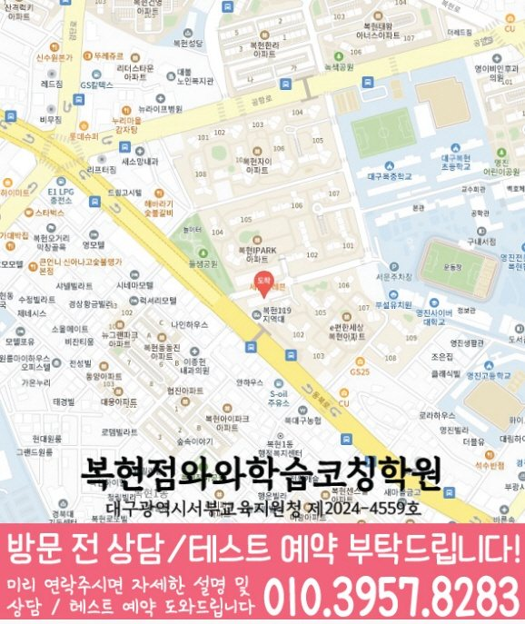

실제 방문 위치
복현점의 실제 방문 주소는 대구 북구 동북로 247 이편한세상복현 상가동 305호 와와학습코칭학원입니다. 상담 예약과 건물 출입 방법은 방문 전에 확인하세요.
WAWA LEARNING COACHING CENTER · 대구 북구
와와학습코칭센터 복현점 상담을 준비할 때는 현재 교재와 답을 고치기 전의 기록을 함께 정리하세요. 이 페이지에서는 학생이 막힌 부분을 나누어 질문하는 기준을 확인하고, 연결된 2개 동네에서 영어·수학·학년별 공부 방법을 선택할 수 있습니다. 실제 방문 주소와 과목별 개설 자료는 별도의 복현점 지점 안내에서 확인하세요.
CENTER AT A GLANCE
와와학습코칭센터 복현점을 검토하는 출발점은 복현동·산격동 지역 표시와 실제 주소의 일치 여부입니다. 그다음 국어·영어·수학 학년 범위와 학교 자료를 확인하면 상담에서 꼭 물어볼 내용을 빠르게 추릴 수 있습니다.
LOCAL SOURCE GUIDE
복현점의 실제 방문 주소는 대구 북구 동북로 247 이편한세상복현 상가동 305호 와와학습코칭학원입니다. 상담 예약과 건물 출입 방법은 방문 전에 확인하세요.
국어 초2~고3 / 영어 초2~고3 / 수학 초2~고3. 별도 확인 학년과 과목별 조건은 아래 기재 자료를 함께 읽고, 희망 요일의 현재 모집 여부는 지점에 문의하세요.
센터 자료의 학교명과 동네별 타깃학교 자료는 서로 다른 참고 목록입니다. 학교명만으로 전용반·제휴·모집 대상이나 학생의 시험 범위를 판단하지 마세요.
SUBJECT & GRADE
초2 · 초3 · 초4 · 초5 · 초6 · 중1 · 중2 · 중3 · 고1 · 고2 · 고3
초2 · 초3 · 초4 · 초5 · 초6 · 중1 · 중2 · 중3 · 고1 · 고2 · 고3
초2 · 초3 · 초4 · 초5 · 초6 · 중1 · 중2 · 중3 · 고1 · 고2 · 고3
기재 학년 확인 필요
자료 미기재를 개설 불가로 판단하지 마세요. 현재 개설 여부는 지점에 문의하세요.
기재 학년 확인 필요
자료 미기재를 개설 불가로 판단하지 마세요. 현재 개설 여부는 지점에 문의하세요.
제공된 센터 자료 기준입니다. 기재 학년은 현재 모집이나 시간표를 뜻하지 않습니다. 미기재 과목과 학생 진도에 맞는 수업은 지점에 확인하세요.
센터 교습비 안내 확인 →


LEARNING FLOW
복현동 학생이 사용하는 교재 목차에 완료·미완료 단원을 표시하고 최근 시험 결과와 비교하면 우선순위를 정하기 쉽습니다.
복현동 학생의 학교 일정부터 고정한 뒤 실제 공부 가능한 날에 개념 확인·문제 풀이·복습을 나누어 배치합니다.
틀린 문제 옆에 개념 부족·조건 누락·계산 실수·시간 부족을 표시하고 원인에 맞는 재확인 날짜를 정합니다.
SCHOOL REFERENCE
센터 자료에 적힌 학교명을 학교급별로 표시했습니다. 동네별 타깃학교 목록과는 별도 자료이며 전용반·제휴·현재 모집을 뜻하지 않습니다. 기재 여부와 관계없이 실제 재학 학교와 시험 범위표를 준비하세요.
PARENT CONSULTATION SCENARIO
시험 직전에는 공부했지만 같은 유형을 반복해서 틀린다면 오답 원인과 재풀이 간격을 나누어 볼 수 있습니다. 와와학습코칭센터 복현점 상담을 준비할 때 다음 기준을 함께 보세요. 이런 변화가 필요하다면 최근 답안에서 개념 부족과 실행 부족을 서로 다른 항목으로 표시해 가져가세요.
센터 상담에서 확인할 자료를 보여 주기 위해 구성한 사례입니다. 특정 학생의 성과나 재원 경험으로 해석해서는 안 됩니다.
QUESTIONS & ANSWERS
최근 시험지, 현재 교재, 학교 범위표, 일주일 공부 기록을 준비하세요. 복현동 학생이 반복해서 틀린 문제에 표시하면 확인 순서를 정하기 좋습니다.
국어 자료상 안내 학년은 초2 · 초3 · 초4 · 초5 · 초6 · 중1 · 중2 · 중3 · 고1 · 고2 · 고3입니다. 영어 자료상 안내 학년은 초2 · 초3 · 초4 · 초5 · 초6 · 중1 · 중2 · 중3 · 고1 · 고2 · 고3입니다. 수학 자료상 안내 학년은 초2 · 초3 · 초4 · 초5 · 초6 · 중1 · 중2 · 중3 · 고1 · 고2 · 고3입니다. 과학의 기재 학년은 확인이 필요합니다. 사회의 기재 학년은 확인이 필요합니다. 현재 모집·요일·시간표는 지점에 확인하세요.
복현동 학교 일정에서 남은 날짜를 확인한 뒤 개념 점검·문제 풀이·오답 재확인을 주차별로 나누어 배치하세요.
와와학습코칭센터 복현점 상담용 기록에는 처음 풀이, 고친 과정, 재풀이 결과를 함께 남겨 주세요. 정답만 적힌 노트보다 원인을 찾기 쉽습니다.
센터 자료의 참고 학교는 복현초, 북중, 성광중, 산격중, 경상고, 성광고, 영진고입니다. 이 목록과 동네별 타깃학교 자료는 범위가 다릅니다. 학교명만으로 전용반·현재 모집·학생의 시험 범위를 확정하지 말고 재학 자료를 준비하세요.
상담 전 체크
복현동 학교 자료는 학년과 시기별로 달라 실제 범위표를 함께 확인해야 합니다.